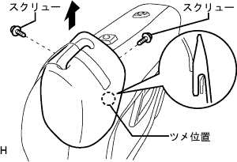
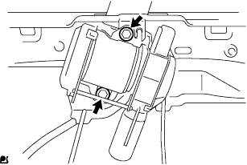

フロントシートASSY LH 分解 |
| 1. フロントシート ヘッドレストASSY取りはずし |
フロントシートヘッドレストASSY を取りはずす。
| 2. フロントシートクッション シールド INN LH取りはずし |
スクリューを取りはずす。
リヤ側からツメのかん合をはずす。
図の矢印の方向にずらして、フロントシートクッションシールドINN LHを取りはずす。

| 3. フロントシート インナベルトASSY LH取りはずし |
インナベルトのコネクタを切り離す。
ワイヤハーネスのクランプをはずす。
ボルトをはずし、フロントシートインナベルトASSY LHを取りはずす。
| 4. リクライニングアジャスタレリーズ ハンドル LH取りはずし |
 |
レリーズハンドルを引き上げた状態で、保護テープを貼ったマイナス薄刃ドライバーを使用してツメのかん合をはずし、リクライニングアジヤスタレリーズハンドルLHを取りはずす。
| 5. フロントシート クッション シールド LH取りはずし |
スクリューを取りはずす。
リヤ側からツメのかん合をはずす。
図の矢印の方向にずらして、フロントシートクッションシールドLHを取りはずす。

| 6. リヤシート ショルダベルト カバー LH取りはずし |
 |
保護テープを貼ったマイナスドライバーを使用してツメのかん合をはずす。
シートベルトをはずし、リヤシートショルダベルトカバーLHを取りはずす。
| 7. フロントシートバック ボードSUB-ASSY LH取りはずし |
シートバツクを前倒位置にする。
フロントシートバツクボードの周囲に保護テープを貼り付ける。
フロントシートバツクボードのレバーを起こし、スクリューを取りはずす。
保護テープを貼ったマイナス薄刃ドライバーを使用して、フロントシートバツクボード下側のフロントシートバツクカバーのかん合をはずす。
シートベルトをはずし、バツクボードを図の矢印の方向に引きながらをはずす。
ケーブルを切り離し、フロントシートバツクボードを取りはずす。
| 8. リヤシートバックロック ベゼル UPR切り離し |
スクリュー2本を取りはずす。
|  |
図の矢印の方向にずらしてツメのかん合をはずす。
| 9. フロントシート ベルト ホールカバー取りはずし |
 |
ツメのかん合をはずし、リヤシートバツクロックベゼルからシートベルトホールカバーを取りはずす。
| 10. リヤシートバックロック ベゼル UPR取りはずし |
アウタシートベルトのアンカボルトを取りはずす。
シートベルトをはずし、リヤシートバツクロックベゼルUPRを取りはずす。
| 11. フロントシートヘッドレスト サポート取りはずし |
ホグリングをはずし、シートバツクカバーの上部を開く。
 |
ツメのかん合をはずし、フロントシートヘッドレストサポート2個を取りはずす。
| 12. フロントシートバック パッド(カバー ツキ) LH取りはずし |
フロントシートバツクカバー & パッドを取りはずす。
| 13. フロントシート クッション カバー＆パッド LH取りはずし |
フロントシートクッションシールドＬＷＲ ＬＨの周囲に保護テープを貼り付ける。
 |
フロントシートクッションカバー&パッドLH前側のクッションフレーム部のツメを起こす。
クッションカバー前側のJフックをはずす。
ルーフモールディングリムーバーを使用して、後側のかん合をはずしフロントシートクッションカバー&パッドLHを取りはずす。
| 14. リクライニング アジャスタ インサイドカバー LH取りはずし |
 |
スクリューを取りはずし、ツメのかん合をはずす。
サブシート ロックコントロール ケーブルをはずし、リクライニングアジヤスタインサイドカバーLHを取りはずす。
| 15. サブシート ロックコントロール ケーブル取りはずし |
サブシート ロックコントロール ケーブルを取りはずす。
| 16. リクライニング アジャスタ インサイドカバー RH取りはずし |
スクリューを取りはずす。
ツメのかん合をはずし、リクライニングアジヤスタインサイドカバーRHを取りはずす。
| 17. フロントシート クッション シールド LWR LH取りはずし |
 |
ツメのかん合をはずす。
シートベルトをはずし、フロントシートクッションシールドLWR LHを取りはずす。
| 18. リヤシート ベルト ホルダ NO.2取りはずし |
ツメのかん合をはずし、リヤシートベルトホルダNo.2を取りはずす。
| 19. リヤシート ベルト ホルダ取りはずし |
ツメのかん合をはずし、リヤシートベルトホルダを取りはずす。
| 20. フロントシート ショルダベルト ガイド取りはずし |
ツメのかん合をはずし、フロントシートシヨルダベルトガイドを取りはずす。
| 21. フロントシート アウタベルトASSY LH取りはずし |
 |
保護テープを貼った薄刃マイナスドライバーを使用してツメのかん合をはずし、ロッキングボタンを手前に引き出しロックを解除する。
コネクタ(プリテンシヨナ用)を切り離す。
|  |
ボルト2本をはずし、フロントシートアウタベルトASSY LHを取りはずす。
| 22. フロントシートバツクカバー(アウタ前側)取りはずし |
スクリューを取りはずす。
 |
フロントシートバツクカバー(アウタ後側)のかん合をはずし、フロントシートバツクカバーを取りはずす。
| 23. フロントシートバツクカバー(アウタ後側)取りはずし |
スクリューをはずし、フロントシートバツクカバーを取りはずす。
| 24. フロントシートバツクカバー(インナ前側)取りはずし |
スクリューを取りはずす。
フロントシートバツクカバー(インナ後側)のかん合をはずし、フロントシートバツクカバーを取りはずす。
| 25. リクライニングアジャスタアームCTR LH W/ケーブル取りはずし |
マイナスドライバーを使用して、Eリングを取りはずす。
リクライニングアジヤスタスペーサをはずし、リクライニングアジヤスタアームCTR LH W/ケーブルを取りはずす。
| 26. リヤシート ターン ロックプレート NO.1 LH取りはずし |
スクリュー3本をはずし、リヤシート ターン ロックプレート NO.1 LHを取りはずす。
| 27. リクライニング トーション バー取りはずし |
| 28. フロントシートバツクカバー(インナ後側)取りはずし |
スクリューをはずし、フロントシートバツクカバーを取りはずす。
| 29. シートトラックコントロール ケーブルASSY取りはずし |
ボルト2本をはずし、シートトラックコントロールケーブルASSYを取りはずす。
| 30. フロントシート プレート スプリング LH取りはずし |
フロントシート プレート スプリング LHを取りはずす。
| 31. リクライニングレリーズ ハンドルSUB-ASSY NO.1取りはずし |
マイナスドライバーを使用して、Eリングを取りはずす。
リクライニングアジヤスタスペーサをはずし、リクライニングアジヤスタアームCTR LHを取りはずす。
| 32. リクライニング トーション バー取りはずし |
| 33. シートクッションスプリング ダンパ取りはずし |
ボルトをはずし、シート クッション スプリング ダンパーを取りはずす。
| 34. フロントシート バツク ストッパASSY RH取りはずし |
ナットをはずし、フロントシート バツク ストッパASSY RHを取りはずす。
| 35. フレーム ウエイト フロント No.2取りはずし |
フレームウエイトフロントNo.2を端をへこませながら取りはずす。
| 36. フロントシート レッグ LH取りはずし |
ボルト6本をはずし、フロントシートレッグLHを取りはずす。